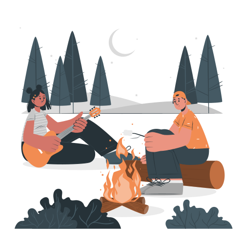

EXPLORER (ISTP • ISFP • ESTP • ESFP)
Adventurous • Energetic • Freedom • Spontaneous
Explorers travel for excitement, spontaneity, and discovery. They are drawn to adventurous places, energetic experiences, and destinations that feel alive, active, and full of possibility.
- love outdoor adventures
- enjoy active travel experiences
- prefer freedom over strict schedules
- like discovering hidden places
- travel for excitement and memories